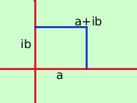
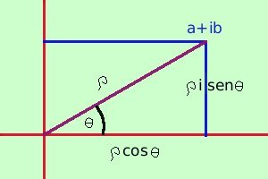

Forma trigonometrica dei numeri complessi
Considero il numero complesso
a + ib

sul piano complesso posso tracciare una circonferenza con raggio la distanza del numero complesso dall'origine:
in tal modo
i numeri a e b sono proporzionali al seno ed al coseno dell'angolo  formato dall'asse delle x e dal segmento che congiunge il numero complesso con l'origine
formato dall'asse delle x e dal segmento che congiunge il numero complesso con l'origine

Valgono le relazioni
 =
=  (a2+b2)
nota (a2+b2)
nota
a =
cos

b =
sen
e quindi avremo la forma trigonometrica per il numero complesso
calcolo
a + ib =
 (
cos (
cos
 + i
sen
)
+ i
sen
)
Vediamo ora come si passa dalla forma normale alla forma trigonometrica e viceversa
- Trasformare un numero complesso dalla forma normale alla forma trigonometrica
- Trasformare un numero complesso dalla forma trigonometrica alla forma normale
|